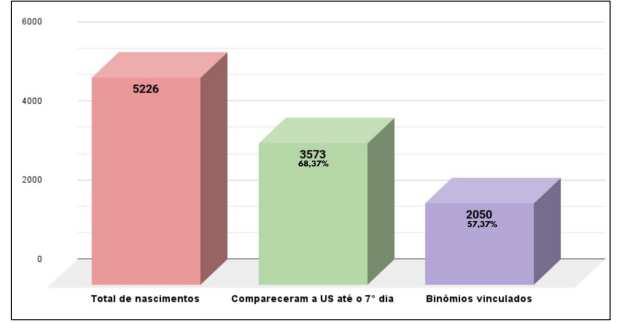

Uma ferramenta estratégica desenvolvida para comparar preços de produtos em diferentes supermercados, ajudando a entender as flutuações de preços, identificar oportunidades de promoções e prever tendências de mercado, tudo em tempo real.
Dashboard de Monitoramento de Egressos Pós-parto (versão interativa)
A transformação dos dados foi acompanhada por uma mudança no formato de apresentação. O modelo anterior, baseado em gráficos e planilhas estáticas, foi substituído por dashboards interativos, como demonstrado na imagem abaixo. As visualizações passaram a fornecer insights mais rápidos e detalhados sobre os indicadores de vinculação e comparecimento dos binômios às USs.
O gráfico a seguir mostra como o modelo anterior estava estruturado, oferecendo uma visão limitada e menos dinâmica do monitoramento.
Modelo de gráfico anterior para monitoramento de egressos pós-parto